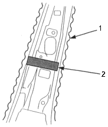
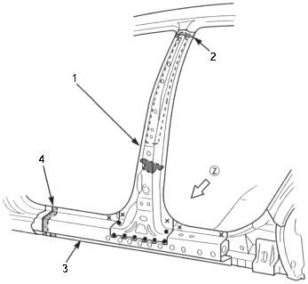
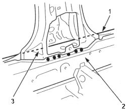
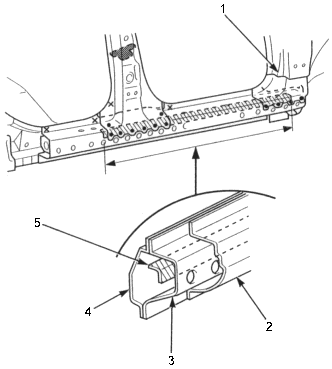

- Glue the insulator to the center inner pillar at the centre pillar separator mounted position.
Insulator: PIN. 774416-SF1-000
Adhesive: Cemedine 366, or equivalent

- CENTRE INNER PILLAR
- INSULATOR
- Cut and set the new centre pillar stiffener and side sill reinforcement into position and tack weld the clamped position.
- Cut the repair part (outer panel), set it into position. Clamp the repair part and check the body dimensions (see section 4).
- Temporarily install the front door, rear door and front fender and check for differences in level and clearance.
Make sure the body lines flow smoothly. - Remove the repair part and weld the centre pillar lower stiffener and side sill reinforcement.

- NEW CENTRE PILLAR STIFFENER
Filler welding
Overlap
- 20 mm (0.8 in.)
- NEW SIDE SILL REINFORCEMENT
- Fillet welding
Overlap
20 mm (0.8 in.)

- NEW SIDE SILL REINFORCEMENT
- INSIDE SILL
- CENTRE INNER PILLAR
NOTE: Replace the drive side of the side sill reinforcement with the assembly without cutting the side sill reinforcement halfway, because there is reinforcement stiffener inside of the side sill reinforcement. Therefore, cut the outer panel to under of the front pillar.

- FRONT PILLAR OUTER PANEL
- OUTER PANEL
- SIDE SILL REINFORCEMENT
- INSIDE SILL
- REINFORCEMENT STIFFENER